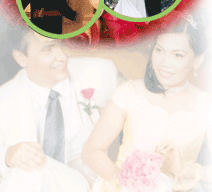
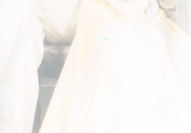

DỊCH VỤ TIỆC CƯỚI LENAM
Hôn lễ Việt Nam tuy ban đầu chịu ảnh hưởng nặng nề theo Chu Công lễ, về sau dần dà cải thiện theo phong tục tập quán và văn hóa riêng của dân tộc ta. Hôn lễ Việt Nam từ đây thiên về xã hội tính, dành nhiều thoải mái cho trai gái hơn và chuyện cấu kết thông gia cũng không nặng nề câu nệ theo tín ngưỡng và phép tắc, giáo điều Khổng Mạnh. Cho nên tới cuối thế kỷ 19 và đầu thế kỷ 20, hôn lễ trong đời sống Việt Nam có tính cởi mở nhiều và ngày càng giản lược nhưng thân hòa, ý nghĩa hơn.
Bắn tin: Sau khi người con trai đã tìm hiểu và đã có ý kén người con gái làm bạn trăm năm, bố mẹ chàng trai nhờ người đưa tin cho bố mẹ cô gái có ưng chịu hay không ưng chịu thì cho tin lại. Về tục bắn tin này, luật ta xưa có nói rằng: "Trước khi đi hỏi, nhà con gái phải làm hôn thư, kể rõ hai người ấy có bệnh tật gì không, con vợ cả, hay con vợ lẽ". Ngày nay lệ lập "hôn thư" không còn nữa, đôi bên chỉ nói miệng cho nhau. Trước đây, một đôi gia đình sang trọng khi cưới xin phỏng theo sách "Văn Công gia lễ" làn hôn thiếp bằng giấy hồng đào, có kê đồ lễ vật, nhưng đây đây chỉ là trường hợp rất hãn hữu.
Dạm ngõ hay xem mặt: Có nhiều cặp trai gái, đã gặp gỡ nhau rồi mới lấy nhau, nhưng việc hôn nhân do cha mẹ định , nên có nhiều đôi trai gái không hề biết mặt nhau; Lễ "chạm ngõ" để chàng trai xem mặt cô gái, và cũng là dịp để cô gái thấy rõ người phối ngẫu tương lai của mình. Lẽ tất nhiên tin đi, mối lại phải nhờ ông mai bà mai. Ông bà mai thường nói hay cho cả hai bên, đôi bên cũng nhân lễ "chạm ngõ"để xác nhận lời nói của ông mai bà mai. Trong lễ "chạm ngõ", đôi bên thường khơi ra những câu chuyện để tìm hiểu chú rể cô dâu, nhất là nhà trai. Muốn tìm biết cô dâu trong lúc ở nhà mình, nhà trai nhìn cô dâu trong công việc làm, xét cô dâu trong cử chỉ. Trong cuộc hôn nhân việc "chạm ngõ" chỉ làm theo tục lệ, đôi bên họ đều tin ở ông mai, bà mai. Giờ đây lễ "chạm ngõ" chỉ còn là một lễ theo hình thức vì khi đôi bên trai gái đã hiểu nhau lắm, không cần phải tới ngày "chạm ngõ" mới biết nhau.
Ăn dặm hay vấn danh: Lễ này ngày nay không còn . Theo tục lệ, khi ông mai bà mai đã được nhà gái trả lời ưng thuận hôn nhân, liền báo tin cho nhà trai biết. Kế đó, ông hoặc bà mai dẫn mấy đại diện của nhà trai tới nhà gái với lễ vật, thường gồm cau trầu, chè rượu. Trong dịp này, nhà trai xin tờ "lộc mệnh" của cô dâu, tức là giấy ghi ngày sinh tháng đẻ.
